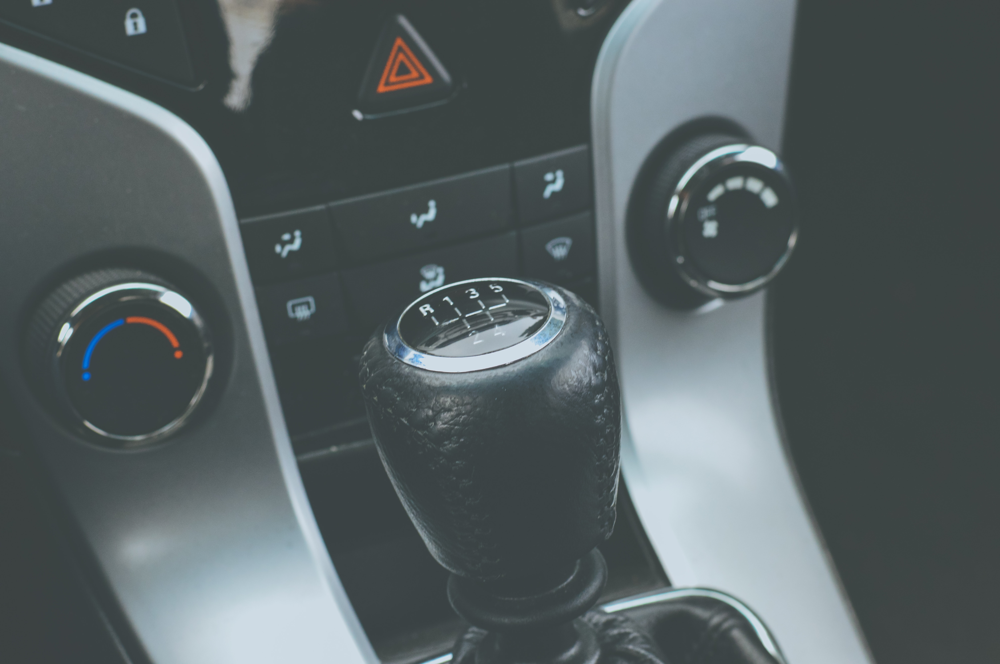

Manual Transmission
For a detailed description on the history of the manual gearbox please click the following.
History of Manual GearboxManual Transmission
The manual tranmission is now going extinct.
In a manual transmission, the flywheel is attached to th engine's crankshaft and
spings along with it. The clutch disk is in between the pressure plate and the flyweel,
and is held against the flywheel under pressure from the pressure plate. When the engine
is running and the clutch is engaged (i.e., clutch pedal up), the flywheel spins the
clutch plate and hence the transmission. As the clutch pedal is depresssed, the throw out bearing
is activated, which causes the pressure plate to stop applying pressure to the clutch disk.
This makes the clutch stop receiving power from the engine, so that the gear can be shifted
without damaging the transmission. When the clutch pedal is released, the throw out bearing
is deactivated, and the clutch disk is again held against the flywheel, allowing it to start receiving
power from the engine.
Automatic Transmission
The automatic transmission is making the manual transmission go
exinct.
Modern automatic transmissions can trace their origins to an early "horseless carriage"
gearbox that was developed in 1904 by the Sturtevant brothers of Boston, Massachusetts.
This unit had two forward speeds, the ratio change being brought about by flyweights that
were driven by the engine. At higher engine speeds, high gear was engaged. As the vehicle slowed
down and engine RPM decreased, the gearbox would shift back to low. Unfortunately, the metallurgy
of the time wasn't up to the task and owing to the abruptness of the gear change, the transmission
would often fail without warning.